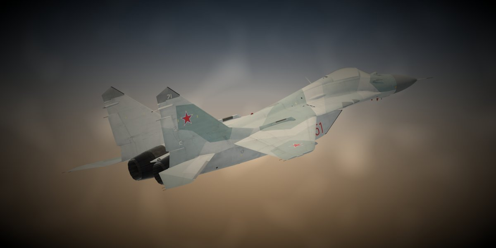
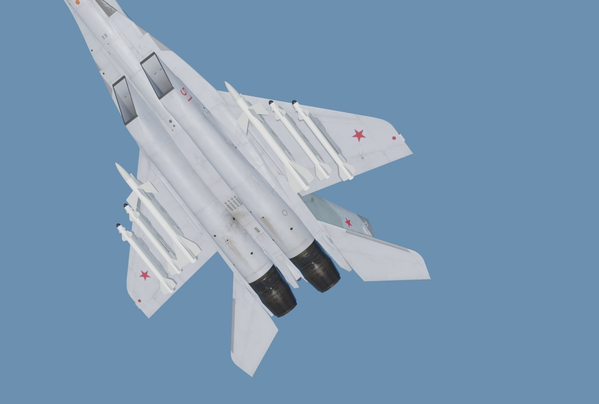
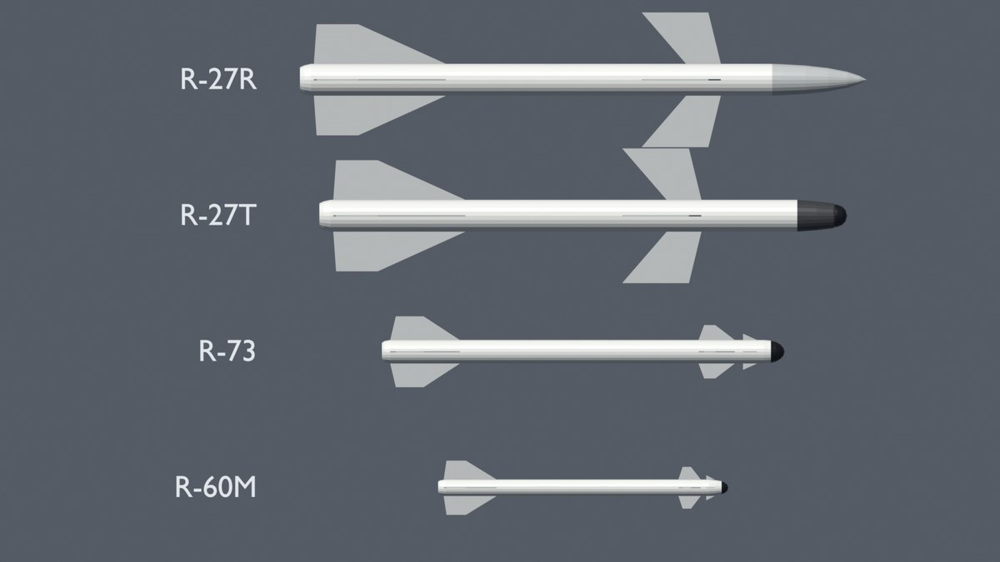
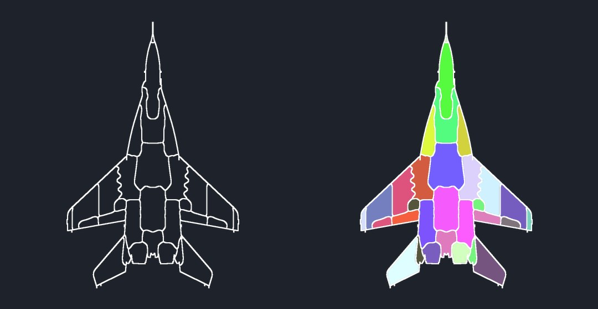
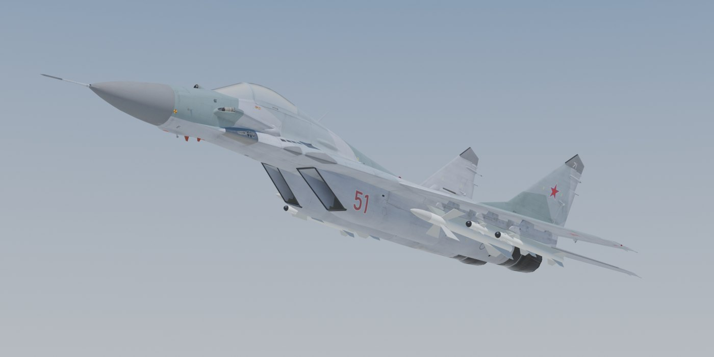
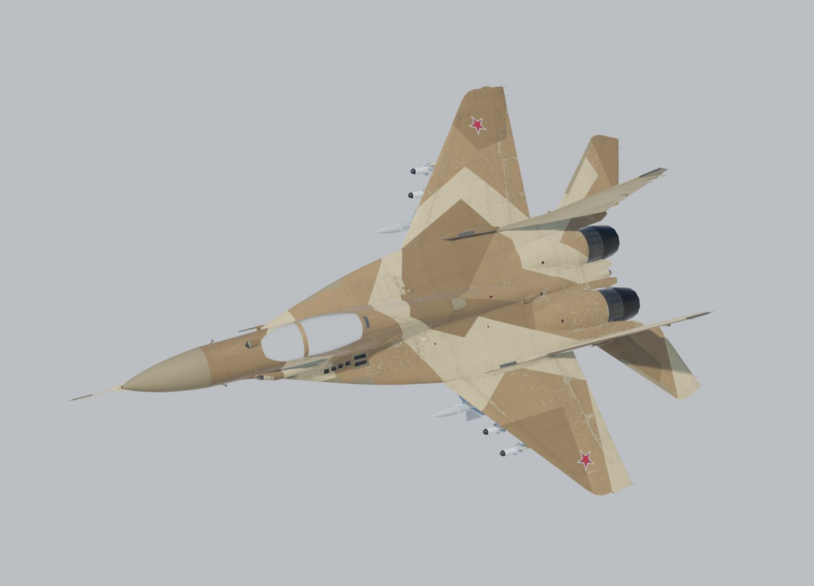
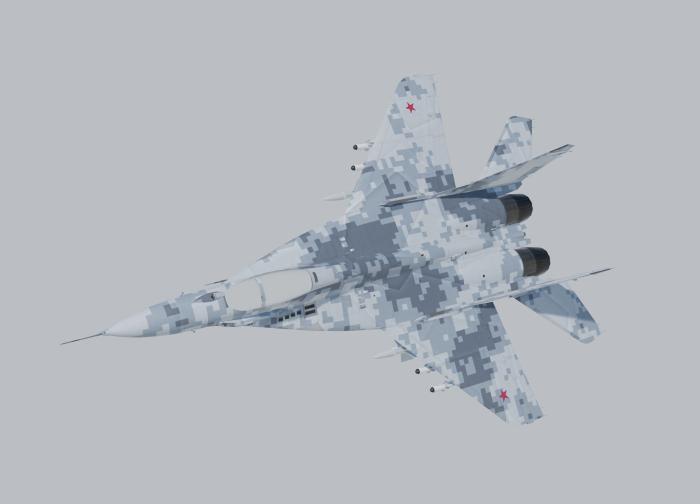
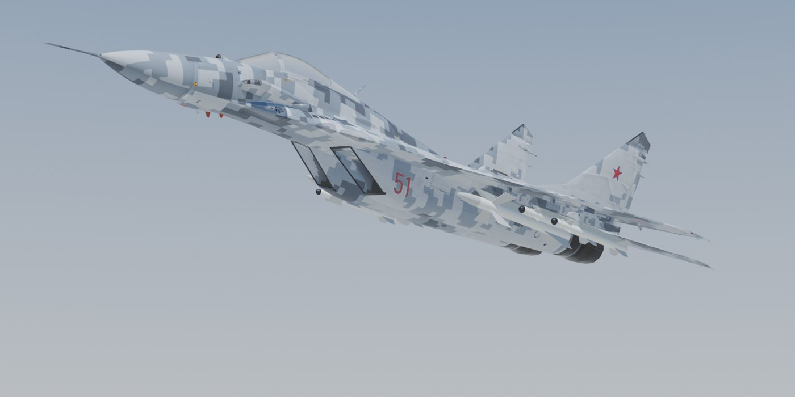
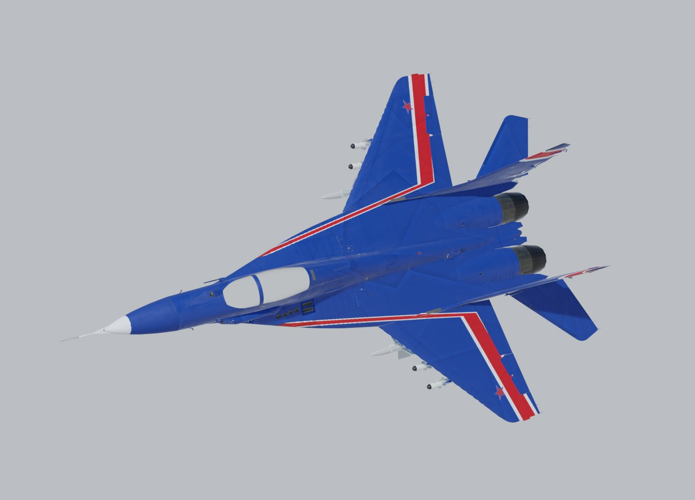
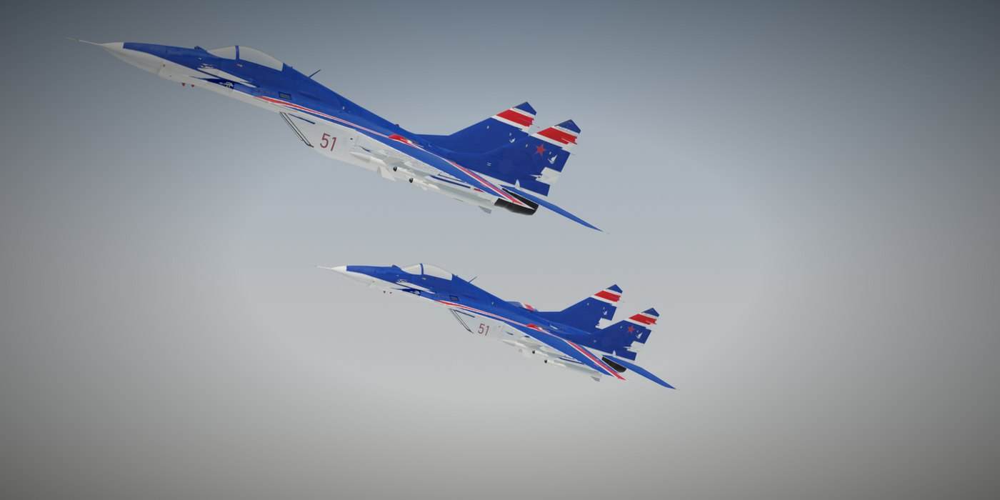

A flyable MiG-29 (9.12) for Nuclear Option, with its own flight model tuned to real-world data, R-27R, R-27T, R-73 and R-60M missiles built from scratch, the GSh-30-1 cannon, working canopy and gear doors, and four liveries.
Tuned offline with a Python re-implementation of Nuclear Option's per-part aerodynamics and engine thrust, against published MiG-29 figures.


Four missiles and their launch rails, modelled from scratch to published dimensions, plus the MiG's own cannon. Each wing has three pylons, matching the real aircraft.

The details that make it feel like a MiG rather than a reskin.

Renders of the mod's model and liveries. In-game screenshots are welcome; open an issue on GitHub to share yours.






Requires BepInEx 5 and Blueprinter 2.0.1 or newer.
BepInEx/plugins.MiG-29 Fulcrum_x.y.z.nobp from the latest release and put it in BepInEx/plugins/MiG-29_Fulcrum/. Delete any older versions first.Multiplayer: every player needs the same mod set, and Blueprinter checks this when you join. This is an early release, so please report handling or weapon issues on GitHub Issues, including your controls and your speed and altitude at the time.